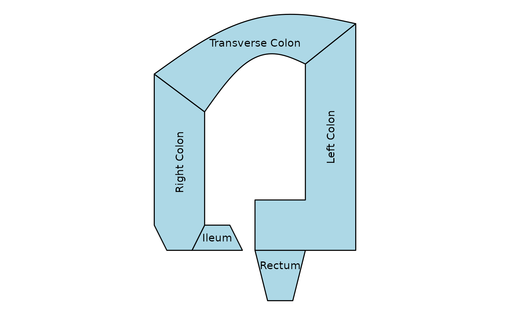
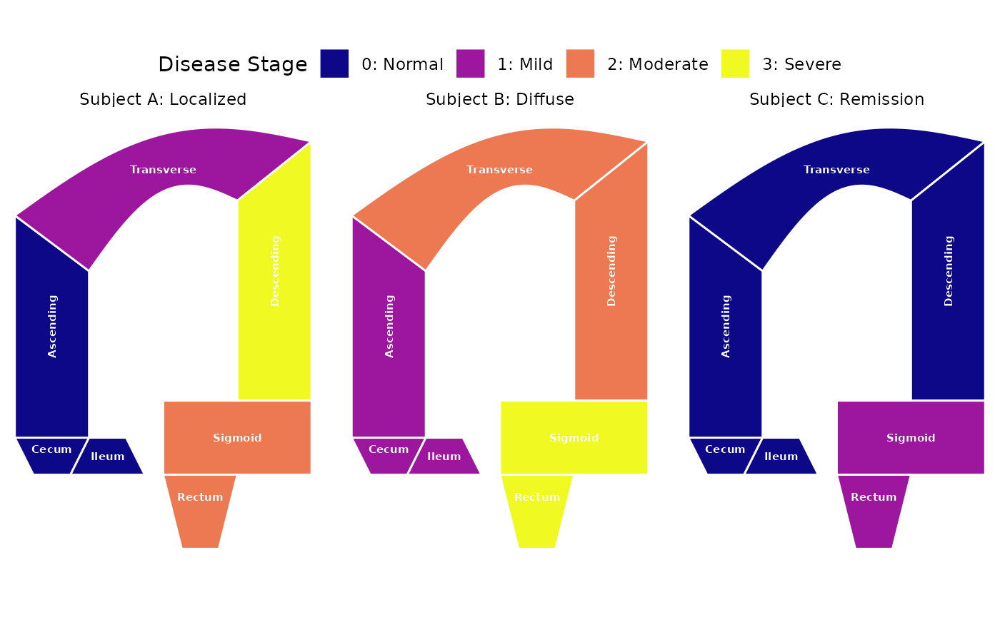
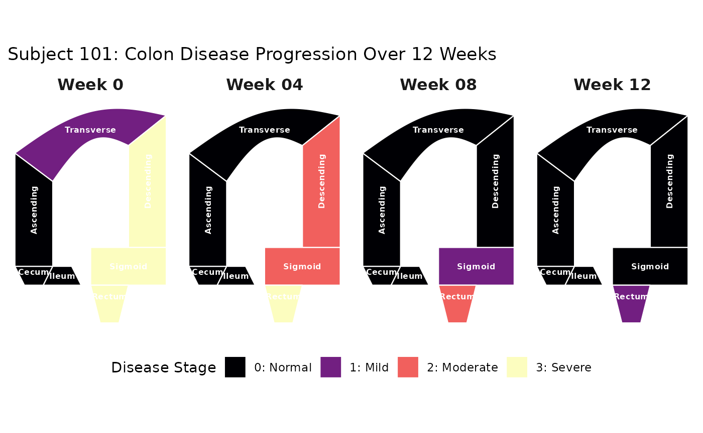
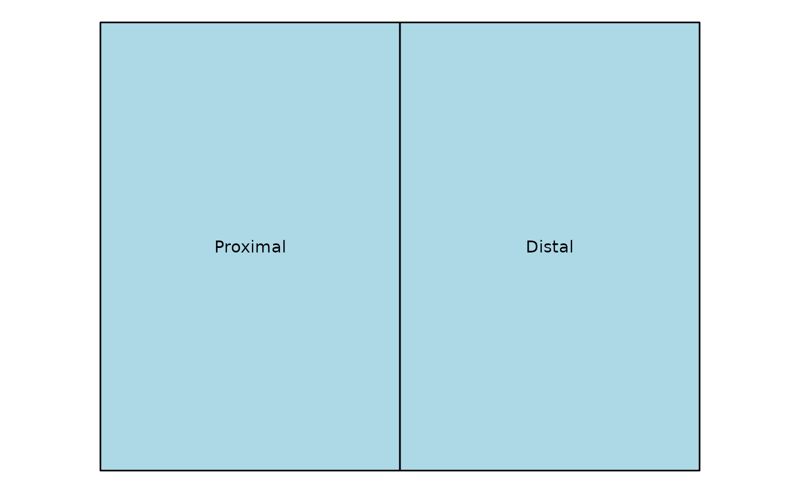

patient_data <- data.frame(
x = 0,
y = 0,
part = c(
"Cecum",
"Ileum",
"Ascending",
"Transverse",
"Descending",
"Sigmoid",
"Rectum"
)
)
patient_data |>
ggplot(aes(x = x, y = y, part = part)) +
geom_colon(
color = "black",
linewidth = 0.5,
fill = "lightblue",
show.legend = FALSE
) +
geom_colon_label() +
coord_fixed() +
theme_void()The SESCD variant is designed for visualizing the Simple Endoscopic Score for Crohn’s Disease (SES-CD). It uses a specific layout scheme and labeling to represent the different segments of the colon according to the SES-CD scoring system.
patient_data <- data.frame(
x = 0,
y = 0,
part = c(
"Ileum",
"Right",
"Left",
"Transverse",
"Rectum"
)
)
patient_data |>
ggplot(aes(x = x, y = y, part = part)) +
geom_colon(
color = "black",
linewidth = 0.5,
fill = "lightblue",
variant = "sescd"
) +
geom_colon_label(variant = "sescd") +
coord_fixed() +
theme_void()You can also provide custom labels for each segment of the colon. This allows you to display specific information or annotations directly on the plot.
patient_data <- data.frame(
x = 0,
y = 0,
part = c(
"Ileum",
"Right",
"Left",
"Transverse",
"Rectum"
),
label = c(
"Ileum",
"Right Colon",
"Left Colon",
"Transverse Colon",
"Rectum"
)
)
patient_data |>
ggplot(aes(x = x, y = y, part = part)) +
geom_colon(
color = "black",
linewidth = 0.5,
fill = "lightblue",
variant = "sescd"
) +
geom_colon_label(variant = "sescd", aes(label = label)) +
coord_fixed() +
theme_void()
Faceting is supported, allowing you to create multiple plots based on a categorical variable. For example:
# Define the parts
parts <- c(
"Cecum",
"Ileum",
"Ascending",
"Transverse",
"Descending",
"Sigmoid",
"Rectum"
)
# Create subjects with discrete stages
discrete_data <- dplyr::bind_rows(
data.frame(
subject = "Subject A: Localized",
x = 0,
y = 0,
part = parts,
stage = factor(c(0, 0, 0, 1, 3, 2, 2))
), # 0=Normal, 1=Mild, 2=Mod, 3=Severe
data.frame(
subject = "Subject B: Diffuse",
x = 0,
y = 0,
part = parts,
stage = factor(c(1, 1, 1, 2, 2, 3, 3))
),
data.frame(
subject = "Subject C: Remission",
x = 0,
y = 0,
part = parts,
stage = factor(c(0, 0, 0, 0, 0, 1, 1))
)
)
ggplot(
discrete_data,
aes(x = x, y = y, part = part, fill = stage)) +
# 1. Draw the colon segments
geom_colon(color = "white", linewidth = 0.5) +
# 2. Add the labels (nudge/center logic still applies)
# Map color to 'stage' too if you want text to change with background
geom_colon_label(
aes(angle = after_stat(angle)),
size = 2,
fontface = "bold",
color = "white"
) +
# 3. Facet by subject
facet_wrap(~subject) +
# 4. DISCRETE VIRIDIS
# 'plasma' or 'viridis' work well for discrete categories
scale_fill_viridis_d(
option = "plasma",
name = "Disease Stage",
labels = c(
"0: Normal",
"1: Mild",
"2: Moderate",
"3: Severe"
)
) +
coord_fixed() +
theme_void() +
theme(
legend.position = "top"
)
You can also create time series plots to show how the condition of the colon changes over time for a patient.
# Longitudinal data for Subject 101
longitudinal_data <- dplyr::bind_rows(
# Baseline: Severe inflammation in the lower colon
data.frame(
visit = "Week 0",
x = 0,
y = 0,
part = parts,
stage = factor(c(0, 0, 0, 1, 3, 3, 3), levels = 0:3)
),
# Week 4: Partial response, inflammation moving down
data.frame(
visit = "Week 04",
x = 0,
y = 0,
part = parts,
stage = factor(c(0, 0, 0, 0, 2, 2, 3), levels = 0:3)
),
# Week 8: Significant improvement
data.frame(
visit = "Week 08",
x = 0,
y = 0,
part = parts,
stage = factor(c(0, 0, 0, 0, 0, 1, 2), levels = 0:3)
),
# Week 12: Clinical Remission
data.frame(
visit = "Week 12",
x = 0,
y = 0,
part = parts,
stage = factor(c(0, 0, 0, 0, 0, 0, 1), levels = 0:3)
)
)
ggplot(longitudinal_data, aes(x = x, y = y, part = part, fill = stage)) +
# 1. Custom Colon Geometry
geom_colon(color = "white", linewidth = 0.4) +
# 2. Centered Labels (nudge logic applies to every facet)
geom_colon_label(
aes(angle = after_stat(angle)),
size = 2.2,
fontface = "bold",
color = "white"
) +
# 3. Facet by Visit (Time Point)
facet_wrap(~visit, nrow = 1) +
# 4. Discrete Viridis Scale
scale_fill_viridis_d(
option = "magma", # 'magma' highlights 'hot' spots well
name = "Disease Stage",
labels = c("0: Normal", "1: Mild", "2: Moderate", "3: Severe"),
drop = FALSE # Keep all stages in the legend even if not present in a facet
) +
coord_fixed() +
theme_minimal() +
theme(
panel.grid = element_blank(),
axis.text = element_blank(),
axis.title = element_blank(),
strip.text = element_text(size = 12, face = "bold"),
legend.position = "bottom"
) +
labs(
title = "Subject 101: Colon Disease Progression Over 12 Weeks")
ggcolonviz ships with two built-in layout variants
("standard" and "sescd"), but you can register
your own blueprint for any anatomical scheme you need.
A blueprint is a plain data frame with three columns:
| Column | Type | Meaning |
|---|---|---|
dx |
numeric | Relative x-coordinate of each polygon vertex |
dy |
numeric | Relative y-coordinate of each polygon vertex |
part |
character | Name of the segment this vertex belongs to |
Each unique part value must have at least 3
rows (the minimum for a closed polygon). The coordinates are
offsets — when you supply x = 5, y = 2 in your
plot data, every vertex for that row is shifted by
(5, 2).
list_colon_variants()
#> [1] "standard" "sescd"Use register_colon_variant() to add your blueprint to
the package registry. The variant is then available by name in
geom_colon(), geom_colon_label(),
colon_sf(), and colon_heatmap_grid().
# A minimal two-segment blueprint (e.g. a simplified proximal / distal split)
simple_blueprint <- data.frame(
dx = c(-2, 0, 0, -2, 0, 2, 2, 0),
dy = c( 0, 0, 3, 3, 0, 0, 3, 3),
part = c(rep("Proximal", 4), rep("Distal", 4))
)
register_colon_variant("simple", simple_blueprint)
# Confirm it is registered
list_colon_variants()
#> [1] "standard" "sescd" "simple"Once registered, the variant works identically to the built-in ones:
data.frame(x = 0, y = 0, part = c("Proximal", "Distal")) |>
ggplot(aes(x = x, y = y, part = part)) +
geom_colon(
variant = "simple",
color = "black",
linewidth = 0.5,
fill = "lightblue"
) +
geom_colon_label(variant = "simple") +
coord_fixed() +
theme_void()
Calling register_colon_variant() with an existing name
replaces it. This lets you iterate on your blueprint
interactively:
# Refine the blueprint and re-register
simple_blueprint_v2 <- simple_blueprint
simple_blueprint_v2$dy <- simple_blueprint_v2$dy * 1.5 # taller segments
register_colon_variant("simple", simple_blueprint_v2)register_colon_variant() validates the input and stops
with a clear message if:
name is not a single non-empty stringdata is not a data framedx, dy,
part) are missingdx or dy are not numeric
# Missing the 'dy' column — will error informativelyly
bad_bp <- data.frame(dx = c(0, 1, 1), part = c("A", "A", "A"))
register_colon_variant("bad", bad_bp)
#> Error:
#> ! `data` must contain columns: dx, dy, part. Missing: dy